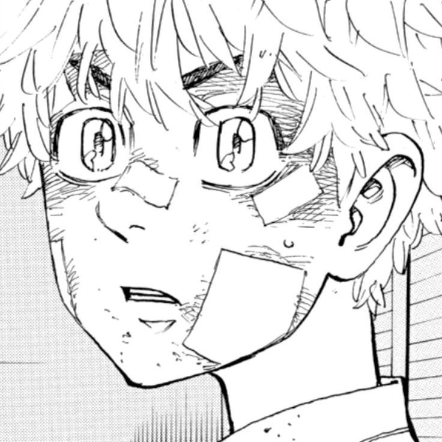
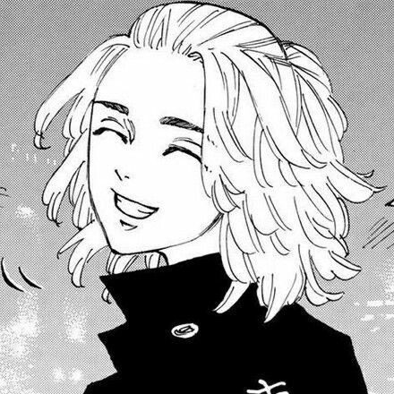
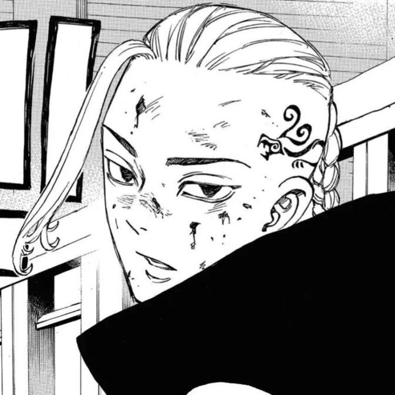
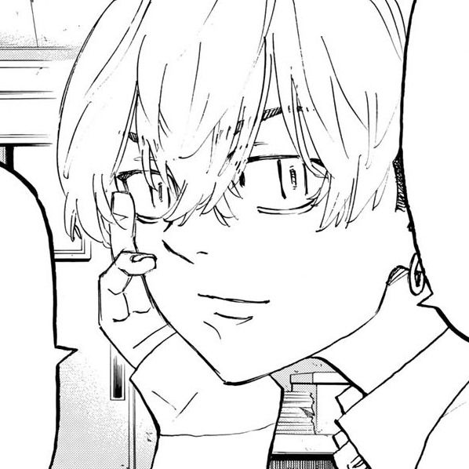
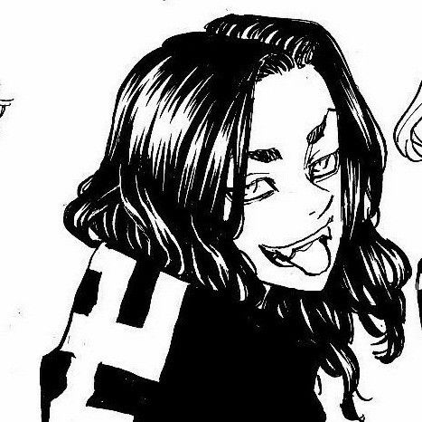
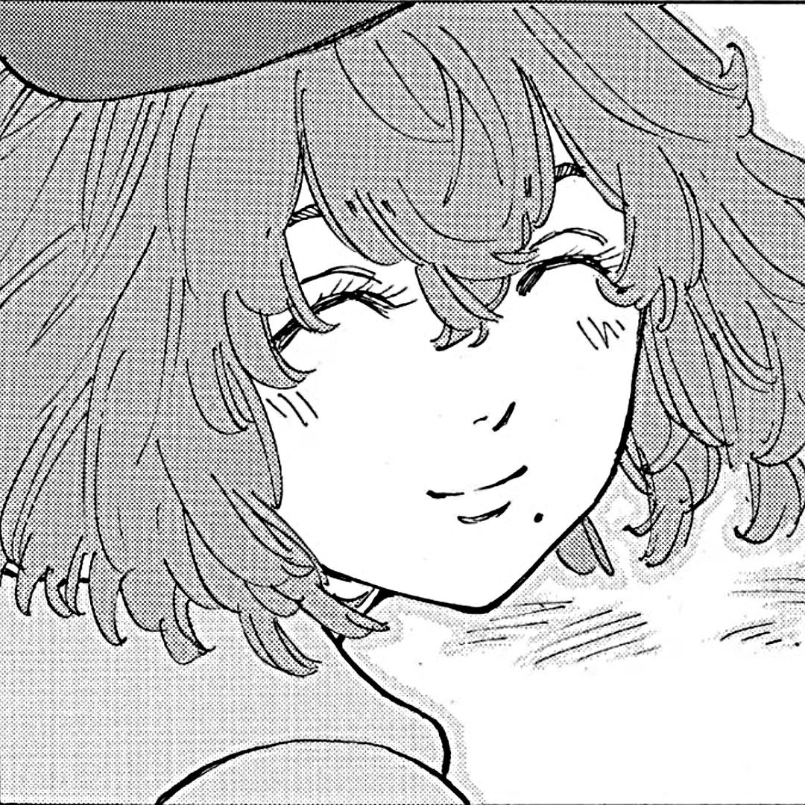
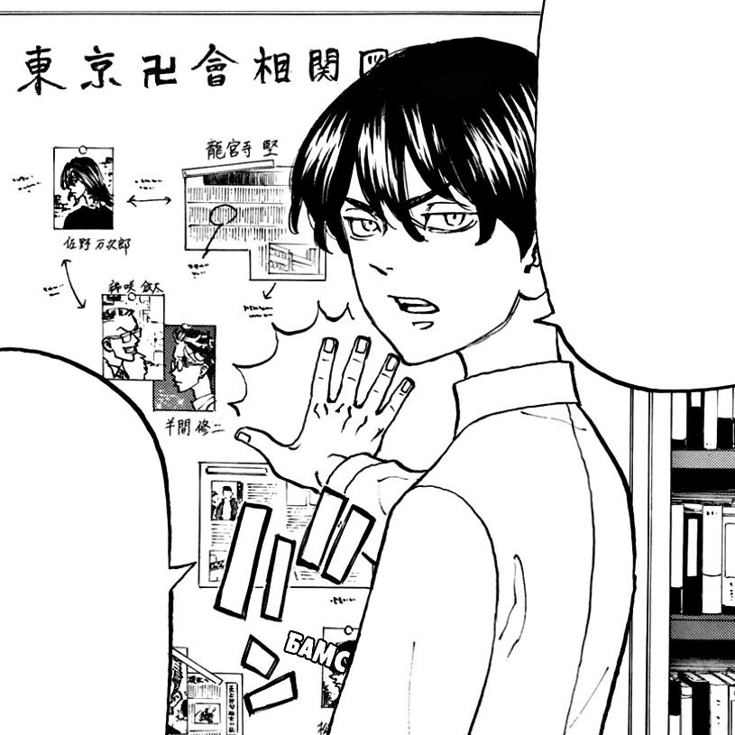

| Takemichi Hanagaki |
Takemichi Hanagaki is the main protagonist of Tokyo Revengers. He is a young man who can travel back in time: a time leaper. |
| Manjiro Sano |
Manjiro Sano is the founding member and the former leader of the Tokyo Manji Gang. |
| Ken Ryuguji |
Ken Ryuguji, also known as Draken, is the vice-president and one of the founding members of the Tokyo Manji Gang. |
| Chifuyu Matsuno |
Chifuyu is the vice-captain of Toman(Tokyo Manji Gang)'s 1st division and Baji's friend. |
| Keisuke Baji |
Baji was a founding member and the First Division Captain of the Tokyo Manji Gang. |
| Hinata Tachibana |
Hinata Tachibana is Takemichi Hanagaki's girlfriend. She is the primary reason for Takemichi's desire to change the past. |
| Naoto Tachibana |
Naoto Tachibana is the younger brother of Hinata Tachibana. At present, he is a detective who works for the organized crime department of Tokyo. |